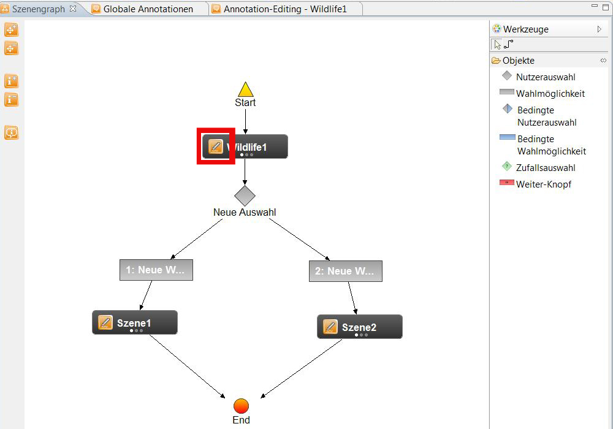

Annotationseditor
Der Annotationseditor wird benötigt, um zu einer im Szenengraphen ausgewählten Szene weiterführende Ressourcen wie
Bilder, Texte, Videos, Audio-Dateien, HTML-Elemente oder Links auf externe Seiten als Annotationen hinzuzufügen.
Diese Ressourcen können entweder direkt in einem der Editoren, oder in einem externen Programm erstellt werden und
dann als Ressource ins Ressourcen-Repository importiert werden. Im SIVA Producer ist die Unterstützung von drei
Annotationseditoren vorgesehen. Ein WYSIWYG-Richtext-Editor ermöglicht es, formatierte Texte mit Bildern, Links und
HTML-Markup Elementen zu erstellen. Die so gestaltete Seite kann in eine XHTML-Datei exportiert werden, die dann als
Annotation mit der selektierten Szene verknüpft wird. Zudem werden ein Bild-Editor und ein Plaintext-Editor angeboten.
Vordefinierte Inhalte, die bereits geladen wurden und sich im Ressourcen-Repository befinden, können ebenso als
Annotation an eine Szene angehängt werden.
Im Folgenden erfahren Sie:
Öffnen des Annotationseditors
Um den Annotationseditor zu öffnen, klicken Sie in der Funktionsleiste auf "Globale Annotationen".

Hier können Sie Annotationen erstellen und diese später auf Szenen anwenden.

- Neue Annotation erstellen
- Hier können Sie zwischen den verschiedenen Annotationstypen (Audio, Bild, Richtext, Untertitel, Video oder PDF)
auswählen.
- Wenn Sie die Art der Annotation ausgewählt haben, ziehen Sie die entsprechende Datei, die Sie bearbeiten wollen,
per Drag and Drop aus dem Medien-Repository in die Arbeitsfläche.
Wird eine Annotation in den Videobereich gelegt, so öffnet sich der Overlayeditor mittels eines Doppelklicks auf den
Anzeigebereich.
In diesem Editor lässt sich die Position der Annotation im Video und die Größe festlegen. Oben im Editor ist
die Zeitleiste der Szene zu sehen. Für jeden Zeitpunkt lässt sich eine Position festlegen.
Dazu muss durch Klicken der Zeitpunkt ausgewählt werden, die Szenen positioniert werden und dann durch
"Position speichern" die Position in den Pfad eingefügt werden.

Will man eine Szene direkt aus dem Szenengraph annotieren so wird im Szenengraph in der Szene, die annotiert
werden soll auf den Annoationsbutton
 (bereits Annotationen an Szene angehängt) bzw.
(bereits Annotationen an Szene angehängt) bzw.
 (noch keine Annotationen an Szene angehängt) geklickt.
(noch keine Annotationen an Szene angehängt) geklickt.

Einstellungen und Anzeigebereiche
Bei einer Annotation können folgende Einstellungen festgelegt werden:
- Szene an die die Annotation angehängt werden soll (wird im Szenengraphen festgelegt)
- Art der Annotation: Audio, Bild, Richtext, Untertitel, Video, PDF
- Startzeitpunkt der Annotation
- Endzeitpunkt der Annotation
- Name der Annotation (wird vom System vergeben, falls der Benutzer keinen festlegt)
- Anzeigebereich im Player
- Öffnen eines neuen Fensters zum Anzeigen der Annotation
Dateiformate
Folgende Dateiformate können benutzt werden:
- Bilder und Grafiken als .jpeg oder .png
- PDFs oder andere Textdateien können nur als Bilddatei (.jpeg/.png) benutzt werden
- Am Besten in 1280x720 Pixel mit H.264-Codec gerenderte Videodateien importieren
- Tonspuren (v.a. in Videodateien) sollten in 48kHz aufgenommen/gerendert sein
Wie man Annotationen aus dem Szenengraphen erstellt, erfahren Sie
hier.